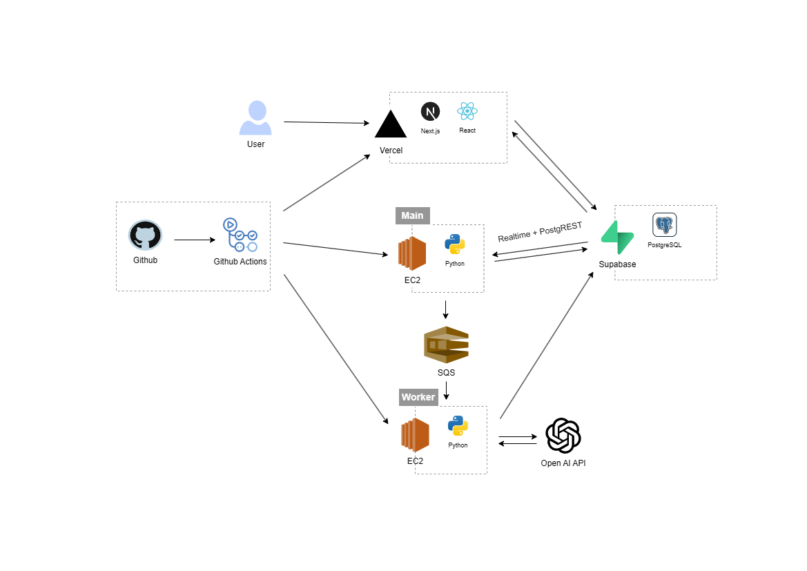
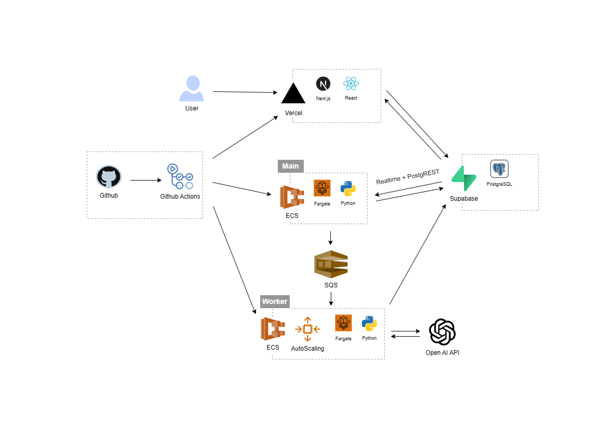
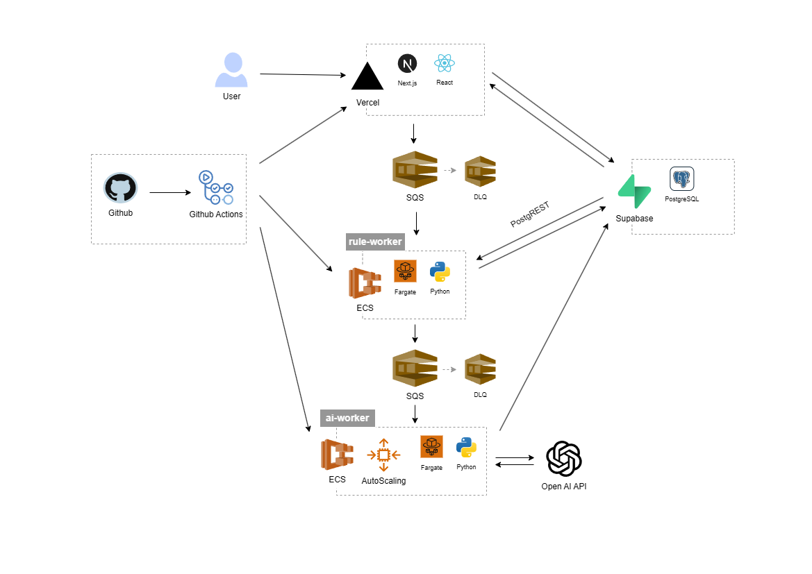
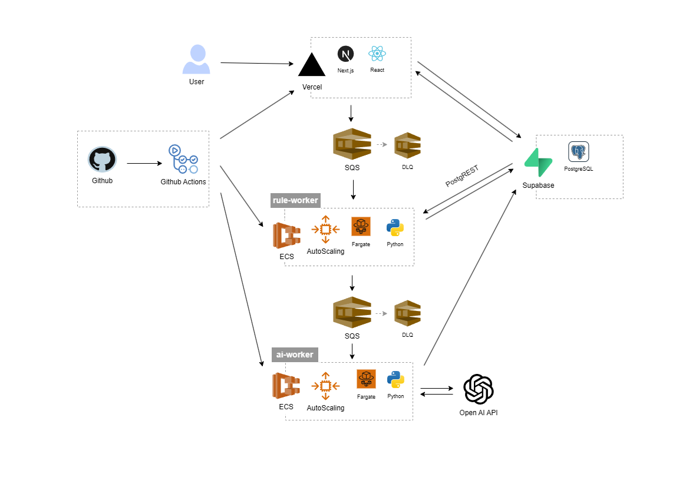
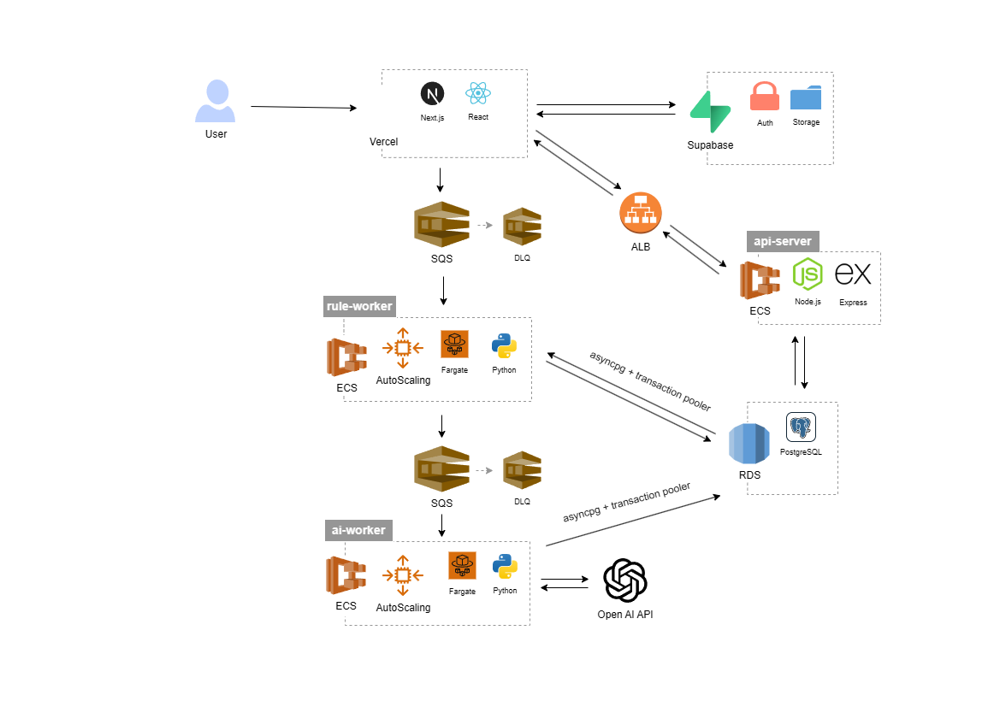

visual history
아키텍처 변화
다이어그램이 실제로 바뀐 시점만 모았습니다. 설정값만 조정된 버전은 이전 다이어그램을 그대로 유지합니다.
v1.0
빠른 구현을 위한 초기 아키텍처

v1.1
AI Worker 역할 분리 및 SQS 도입

v2.0
ECS Fargate 전환 및 Auto Scaling 적용

v3.0
Realtime 기반 이벤트 트리거 제거 및 Queue 기반 이벤트 처리 구조 도입

v3.1
Rule-worker Coroutine 적용 및 Auto Scaling 도입

v4.0 ~ v5.1
AWS RDS 이전 및 DB 접근 구조 개선
(이후 v4.1 ~ v5.1은 Retry/Semaphore 로직, Auto Scaling 정책, DB Connection Pool, Task 수 등 설정·로직만 조정되어 아키텍처 변경 없음)
(이후 v4.1 ~ v5.1은 Retry/Semaphore 로직, Auto Scaling 정책, DB Connection Pool, Task 수 등 설정·로직만 조정되어 아키텍처 변경 없음)
